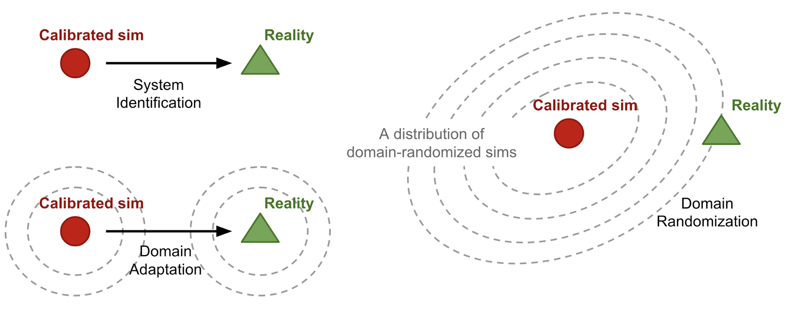
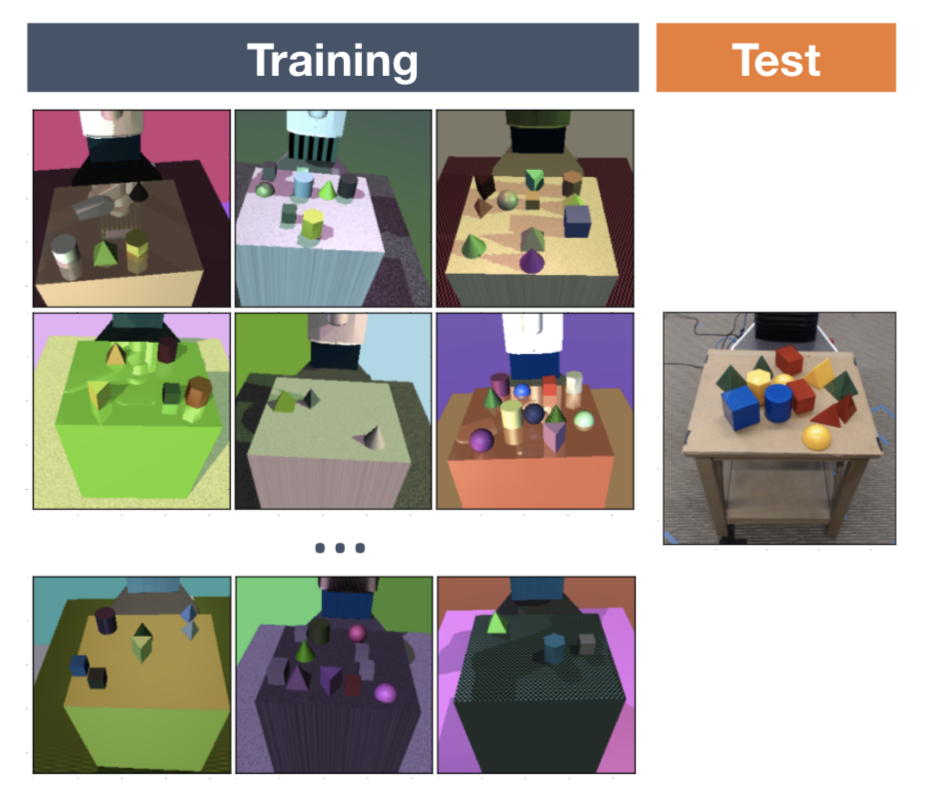
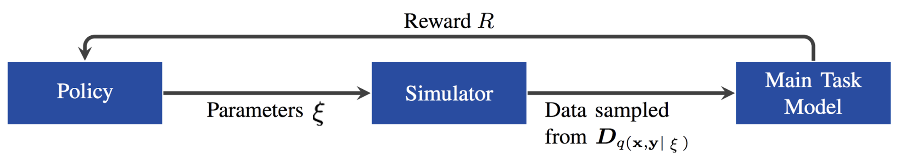
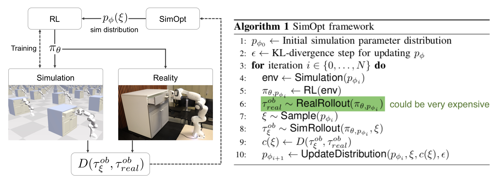
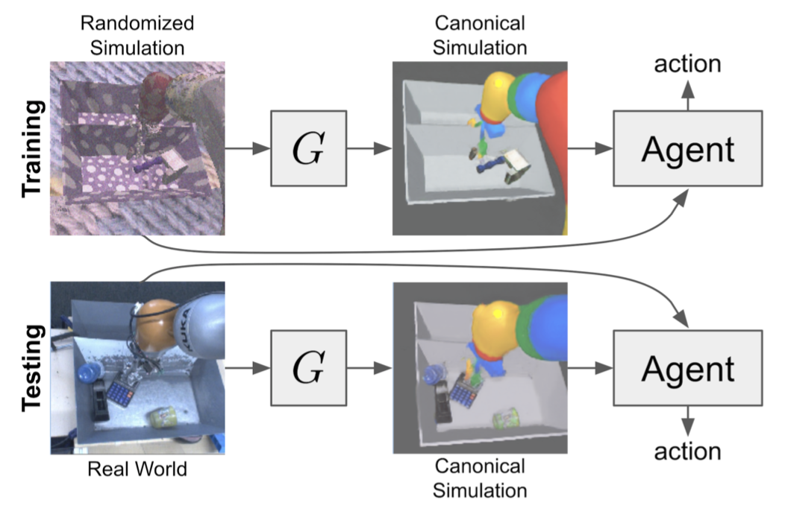
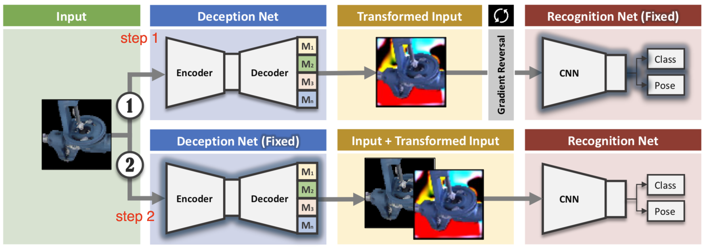
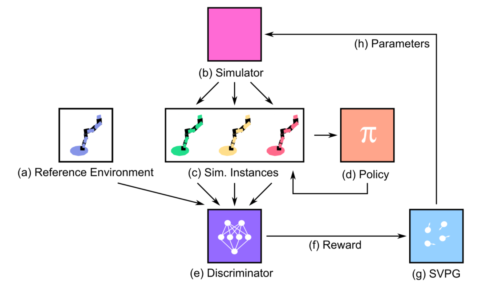

目录
在机器人学中，最困难的问题之一是如何让模型成功迁移到现实世界。由于深度强化学习算法的样本效率低下，以及在真实机器人上采集数据的成本高昂，我们通常需要在模拟器中训练模型，模拟器理论上可以提供无限量的数据。然而，模拟器与物理世界之间的现实差距，往往导致模型在物理机器人上失效。这种差距源于物理参数的不一致（例如摩擦力、kp、阻尼、质量、密度），更致命的是物理建模本身的不准确（例如软表面之间的碰撞）。
为了缩小 Sim2Real 差距，我们需要改进模拟器，使其更接近现实。以下是一些常见方法：
DA 和 DR 都是无监督方法。与需要大量真实数据样本来捕捉分布的 DA 相比，DR 可能只需要很少甚至不需要真实数据。本文重点讨论 DR。

什么是域随机化？
为了使定义更具普适性，我们将可以完全访问的环境（即模拟器）称为源域（source domain），将希望将模型迁移到的环境（即物理世界）称为目标域（target domain）。训练在源域中进行。我们可以控制源域中的一组 N 随机化参数 e_\xi，这些参数由一个配置 \xi 指定，该配置从随机化空间 \xi \in \Xi \subset \mathbb{R}^N 中采样得到。
在策略训练过程中，从应用了随机化的源域中采集轨迹。因此，策略会接触到各种不同的环境并学会泛化。策略参数 \theta 的训练目标是最大化在配置分布上的期望奖励 R(.) 的平均值：
其中 \tau_\xi 是在用 \xi 随机化后的源域中采集的轨迹。从某种意义上说，“源域和目标域之间的差异被建模为源域中的变异性。”（引自 Peng et al. 2018）。
均匀域随机化
在 DR 的原始形式中（Tobin et al, 2017；Sadeghi et al. 2016），每个随机化参数 \xi_i 都被限制在一个区间 \xi_i \in [\xi_i^\text{low}, \xi_i^\text{high}], i=1,\dots,N 内，并在该范围内进行均匀采样。
随机化参数可以控制场景的外观，包括但不限于以下内容（见图 2）。在模拟且经过随机化的图像上训练的模型，能够迁移到未经随机化的真实图像上。

模拟器中的物理动力学也可以被随机化（Peng et al. 2018）。研究表明，循环策略能够适应不同的物理动力学，包括部分可观测的现实。一组物理动力学特征包括但不限于：
借助视觉和动力学 DR，在 OpenAI Robotics，我们成功学习到了一个能在真实灵巧机器人手上工作的策略（OpenAI, 2018）。我们的操作任务是教会机器人手持续旋转一个物体，以达到 50 个连续的随机目标姿态。该任务的 Sim2Real 差距非常大，原因包括：(a) 机器人与物体之间同时存在大量接触；(b) 对物体碰撞和其他运动的模拟不够完善。最初，策略几乎无法存活超过 5 秒就会掉落物体。但在 DR 的帮助下，该策略最终在现实中表现得惊人出色。
域随机化为何有效？
现在你可能会问，为什么域随机化能如此有效？这个想法听起来非常简单。我发现以下两种互不排斥的解释最有说服力。
将 DR 视为优化
一种观点（Vuong, et al, 2019）是将 DR 中学习随机化参数视为双层优化。假设我们能访问真实环境 e_\text{real}，且随机化配置是从由 \phi 参数化的分布 \xi \sim P_\phi(\xi) 中采样得到的，我们希望学习一个分布，在该分布上训练的策略 \pi_\theta 能在 e_\text{real} 中获得最大的性能：
其中 \mathcal{L}(\pi; e) 是策略 \pi 在环境 e 中评估的损失函数。
虽然均匀 DR 中的随机化范围是人工选取的，但它通常涉及领域知识，并基于迁移性能进行几轮试错调整。本质上这是一个手动优化 \phi 以获得最优 \mathcal{L}(\pi_{\theta^*(\phi)}; e_\text{real}) 的过程。
下一节介绍的引导式域随机化很大程度上受此观点启发，目标是自动进行双层优化并学习最佳的参数分布。
将 DR 视为元学习
在我们的灵巧操作项目中（OpenAI, 2018），我们训练了一个 LSTM 策略，使其能在不同的环境动力学中泛化。我们观察到，一旦机器人完成第一次旋转，后续成功所需的耗时会显著缩短。此外，没有记忆的前馈（FF）策略无法迁移到物理机器人上。这两点都是策略动态学习并适应新环境的证据。
从某种意义上说，域随机化构造了一系列不同的任务。循环网络中的记忆赋予策略在任务间实现 的能力，并进一步在真实世界环境中发挥作用。元学习：学会快速学习
引导式域随机化
vanilla DR 假设无法访问真实数据，因此在模拟器中尽可能广泛且均匀地采样随机化配置，希望真实环境能被这个宽广的分布所覆盖。一种更复杂的策略是合理的——用基于任务性能、真实数据或模拟器的引导来替代均匀采样。
引导式 DR 的一个动机是避免在不现实的环境中训练模型，从而节省计算资源。另一个动机是避免因随机化分布过宽而产生不可行的解，这些解可能会阻碍策略的成功学习。
针对任务性能的优化
假设我们使用不同的随机化参数 \xi \sim P_\phi(\xi) 训练一系列策略，其中 P_\xi 是由 \phi 参数化的 \xi 的分布。之后我们在目标域的下游任务上（即在现实中控制机器人或在验证集上评估）逐一测试它们以收集反馈。这些反馈告诉我们某个配置 \xi 的优劣，并为优化 \phi 提供信号。
受 NAS 启发，AutoAugment（Cubuk, et al. 2018）将学习图像分类最佳数据增强操作（例如剪切、旋转、反色等）的问题建模为强化学习问题。请注意，AutoAugment 并非针对 Sim2Real 迁移提出，但属于由任务性能引导的 DR 范畴。每个增强配置都在评估集上测试，其性能提升被用作奖励来训练 PPO 策略。该策略为不同数据集输出不同的增强策略；例如，对于 CIFAR-10，AutoAugment 主要选择基于颜色的变换，而 ImageNet 则偏好基于几何的变换。
Ruiz (2019) 将任务反馈视为强化学习问题中的奖励，并提出了一种基于 RL 的方法，称为“learning to simulate”，用于调整 \xi。一个策略被训练来预测 \xi，使用主任务验证数据的性能指标作为奖励，该奖励被建模为多元高斯分布。总体思路与 AutoAugment 类似，即在数据生成上应用 NAS。根据他们的实验，即使主任务模型尚未收敛，它仍能为数据生成策略提供合理的信号。

进化算法是另一种思路，其中反馈被视为引导进化的适应度（Yu et al, 2019）。在这项研究中，他们使用了 CMA-ES（协方差矩阵自适应进化策略），而适应度是在目标环境中 \xi 条件策略的性能。在附录中，他们将 CMA-ES 与其他对 \xi 动力学建模的方法进行了比较，包括贝叶斯优化或神经网络。主要结论是这些方法不如 CMA-ES 稳定或样本高效。有趣的是，当将 P(\xi) 建模为神经网络时，发现 LSTM 明显优于前馈网络。
有人认为 Sim2Real 差距是外观差距和内容差距的结合；即大多数受 GAN 启发的 DA 模型都专注于外观差距。Meta-Sim（Kar, et al. 2019）旨在通过生成任务特定的合成数据集来弥合内容差距。Meta-Sim 以自动驾驶汽车训练为例，因此场景可能非常复杂。在这种情况下，合成场景由具有属性（例如位置、颜色）以及对象间关系的分层对象参数化。该分层由类似于结构化域随机化（SDR；Prakash et al., 2018）的概率场景文法指定，并假设事先已知。一个模型 G 被训练来通过以下方式增强场景属性 s 的分布：
不幸的是，这类方法并不适合 Sim2Real 场景。无论是 RL 策略还是进化算法模型，都需要大量真实样本。而且将物理机器人上的实时反馈采集纳入训练循环成本极高。你是否愿意用更少的计算资源换取真实数据采集，取决于你的具体任务。
匹配真实数据分布
使用真实数据来引导域随机化，感觉很像在做系统辨识或域适配。DA 的核心思想是改进合成数据以匹配真实数据分布。在由真实数据引导的 DR 中，我们希望学习随机化参数 \xi，使模拟器中的状态分布接近真实世界的状态分布。
SimOpt 模型（Chebotar et al, 2019）首先在初始随机化分布 P_\phi(\xi) 下训练，得到策略 \pi_{\theta, P_\phi}。然后将该策略同时部署在模拟器和物理机器人上，分别采集轨迹 \tau_\xi 和 \tau_\text{real}。优化目标是最小化模拟与真实轨迹之间的差异：
其中 D(.) 是一个基于轨迹的差异度量。与“Learning to simulate”论文类似，SimOpt 也必须解决如何将梯度传播通过不可微模拟器这一棘手问题。它采用了一种称为 相对熵策略搜索 的方法，更多细节请参阅论文。

RCAN（James et al., 2019），全称“Randomized-to-Canonical Adaptation Networks”，是 DA 和 DR 在端到端强化学习任务中的一个出色结合。一个图像条件 GAN（cGAN）在模拟器中训练，用于将域随机化图像转换为非随机化版本（即“规范版本”）。之后同一个模型被用于将真实图像转换为对应的模拟版本，这样智能体就能接收到与训练时一致的观测。核心假设仍然是域随机化模拟图像的分布足够宽广，能够覆盖真实世界的样本。

强化学习模型在模拟器中端到端训练，用于基于视觉的机械臂抓取。每一步都应用随机化，包括托盘分隔板的位置、待抓取物体、随机纹理，以及灯光的位置、方向和颜色。规范版本是默认的模拟器外观。RCAN 试图学习一个生成器
G：随机化图像 \to → {规范图像、分割、深度}
其中分割掩码和深度图像被用作辅助任务。相比均匀 DR，RCAN 实现了更好的零样本迁移，尽管两者都比仅在真实图像上训练的模型要差。从概念上讲，RCAN 的操作方向与 GraspGAN 相反，后者通过域适配将合成图像转换为真实图像。
由模拟器中的数据引导
网络驱动的域随机化（Zakharov et al., 2019），也称为 DeceptionNet，其动机是学习哪些随机化对于弥合图像分类任务的域差距真正有用。
随机化通过一组具有编码器-解码器结构的欺骗模块（deception modules）来应用。这些欺骗模块被专门设计用于转换图像，例如改变背景、添加失真、改变光照等。另一个识别网络则负责主任务，对转换后的图像进行分类。
训练包括两个步骤：

用于训练欺骗模块的反馈由下游分类器提供。但与上面一节中试图最大化任务性能不同，随机化模块的目标是创造更困难的样本。一个明显的缺点是你需要为不同的数据集或任务手动设计不同的欺骗模块，这使得它不易扩展。鉴于它是零样本迁移，其在 MNIST 和 LineMOD 上的结果仍然不如最先进的 DA 方法。
类似地，主动域随机化（ADR；Mehta et al., 2019）也依赖模拟器数据来创建更难的训练样本。ADR 在给定的随机化范围内搜索最具信息量的环境变体，其中信息量通过随机化环境实例与参考（原始、非随机化）环境实例中策略 rollout 的差异来衡量。这听起来有点像 SimOpt？需要注意的是，SimOpt 衡量的是模拟与真实 rollout 之间的差异，而 ADR 衡量的是随机化与非随机化模拟之间的差异，从而避免了昂贵的真实数据采集部分。

具体的训练过程如下：
ADR 的想法非常吸引人，但有两个小问题。在运行随机策略时，轨迹之间的相似性可能不是衡量环境难度的好方法。Sim2Real 的实验结果并不那么令人兴奋，但论文指出 ADR 的优势在于它探索了更小的随机化参数范围。
引用格式：
@article{weng2019DR,
title = "Domain Randomization for Sim2Real Transfer",
author = "Weng, Lilian",
journal = "lilianweng.github.io",
year = "2019",
url = "https://lilianweng.github.io/posts/2019-05-05-domain-randomization/"
}
总之，读完这篇文章后，我希望你能像我一样喜欢域随机化 :）。
参考文献
[1] Josh Tobin, et al. “Domain randomization for transferring deep neural networks from simulation to the real world.” IROS, 2017.
[2] Fereshteh Sadeghi and Sergey Levine. “CAD2RL: Real single-image flight without a single real image.” arXiv:1611.04201 (2016).
[3] Xue Bin Peng, et al. “Sim-to-real transfer of robotic control with dynamics randomization.” ICRA, 2018.
[4] Nataniel Ruiz, et al. “Learning to Simulate.” ICLR 2019
[5] OpenAI. “Learning Dexterous In-Hand Manipulation.” arXiv:1808.00177 (2018).
[6] OpenAI Blog. “Learning dexterity” July 30, 2018.
[7] Quan Vuong, et al. “How to pick the domain randomization parameters for sim-to-real transfer of reinforcement learning policies?.” arXiv:1903.11774 (2019).
[8] Ekin D. Cubuk, et al. “AutoAugment: Learning augmentation policies from data.” arXiv:1805.09501 (2018).
[9] Wenhao Yu et al. “Policy Transfer with Strategy Optimization.” ICLR 2019
[10] Yevgen Chebotar et al. “Closing the Sim-to-Real Loop: Adapting Simulation Randomization with Real World Experience.” Arxiv: 1810.05687 (2019).
[11] Stephen James et al. “Sim-to-real via sim-to-sim: Data-efficient robotic grasping via randomized-to-canonical adaptation networks” CVPR 2019.
[12] Bhairav Mehta et al. “Active Domain Randomization” arXiv:1904.04762
[13] Sergey Zakharov,et al. “DeceptionNet: Network-Driven Domain Randomization.” arXiv:1904.02750 (2019).
[14] Amlan Kar, et al. “Meta-Sim: Learning to Generate Synthetic Datasets.” arXiv:1904.11621 (2019).
[15] Aayush Prakash, et al. “Structured Domain Randomization: Bridging the Reality Gap by Context-Aware Synthetic Data.” arXiv:1810.10093 (2018).